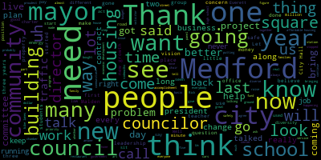

[SPEAKER_02]: And that is all before we get to any of this? Exactly.
[DiRico]: So I'll come at 7, I'll start off, we'll do all this stuff, get it all done, and then I'll introduce you.
[SPEAKER_11]: th th
[SPEAKER_02]: So do you sing professionally? I'm sorry.
[SPEAKER_03]: No, no, no.
[DiRico]: Oh, is that it, Steve?
[SPEAKER_09]: So, Steve, are they going to wait off stage? Because Jim's going to introduce them. You can do it that way. Natalie's going to get them now. Oh, she is? And then as soon as they hear. th th We'll just have you guys off stage, and then I'll do the welcome and bring you guys on. Does that work?
[DiRico]: Good evening, and welcome to the 2023 Medford Chamber of Commerce Mayoral Debate. My name is Rocco DiRico. I'm the president of the Medford Chamber of Commerce. The Medford Chamber of Commerce provides a unified voice for the business community and for business districts of Medford. Today the chamber is bigger, better, and stronger than ever. We have over 250 members and more than 20 platinum members. And every day the chamber fights to preserve, protect, and promote all the businesses of the city of Medford. It is so great to have this year's debate at the McGlynn School. I wanna publicly thank Principal Nick Tucci and Medford Public Schools for hosting this year's debate. We're so thankful, they've been wonderful hosts for us. Tonight's debate is also the most accessible debate that we've had of these debates. It's being broadcast live on Medford Community Media and YouTube, and a big thank you to Kevin Harrington and his team from Medford Community Media. It took a lot of people to put this debate together. I want to thank the Government Affairs Committee of the Chamber, Co-Chairs Stephen Pompeo and Dominic Camara, Maury Carroll, Natalie Breen, and Jamie Thompson. I also want to thank our Executive Director, Laura O'Neill. She is like a one-woman multinational corporation. She is our only staff member and runs everything that the Chamber does, so thank you, Laura, for all you do. I also want to thank Laurel Siegel, who helped us promote this debate, and tonight's ushers, Sam Tarabelsi, Justin Lasko, Rosemary Adania, and Christina Del Sol. Tonight's debate really would not be possible without all their hard work. We are a totally volunteer organization, aside from Laura and all these folks have donated a lot of hours over the last two months to make that happen. We're also thrilled tonight because Jim Morelli from Fox 25 is our moderator. As many of you know, Carrie Kavanaugh has moderated this debate in the past. She was not available tonight because she's receiving a very prestigious award in Washington, D.C. But I want to thank Carrie because she convinced Jim to help us out tonight, so I really appreciate it. I also want to thank offstage Bill O'Keefe, who's going to be our timekeeper for tonight, which is a very stressful job. And a big thank you to our panel. Dan Kennedy has done this for us a number of times. Dan Kennedy is from Northeastern University. Penny Outlaw from the DeMock Center. Mark Shanahan of the Boston Globe. and Anne-Marie Gallagher of the Medford Historical Society. We're so fortunate to have so many of these talented people serving on our panel. And I want to make it clear, they are the only people who have seen the questions for tonight. Nobody on the board, none of the candidates, nobody has seen the questions that have been submitted except for the panel. And of course, I really want to thank both candidates. I've known both of these candidates for a very long time, and they are both incredibly dedicated public servants, and I have tremendous respect for both of them. It takes a lot of courage and incredible dedication and time away from your family to run for public office, and I think they're two amazing candidates. But I do want to emphasize that the Medford Chamber of Commerce is a nonpartisan organization. We have not and we will not endorse either candidate. No member of the Chamber of Commerce has seen any of tonight's questions. Neither candidate has seen any of tonight's questions. The questions that you hear tonight are all questions that were submitted by Medford residents. This debate is for you, the residents of Medford. So I ask that you please do not boo or cheer for any candidate. That'll only take away from your candidate's time. We're just hoping for a peaceful civil debate here tonight. And now I'm gonna introduce Steven Pompeo, who is the co-chair of our Government Affairs Committee, and his grandniece, Cece.
[SPEAKER_10]: Thank you, Rocco. If you would all please rise as we recite the Pledge of Allegiance, led by Cecilia Pompeo, second grade student at the Brooks School. I'm going to have to use this one.
[SPEAKER_03]: Pledge allegiance to the flag of the United States of America, and to the republic for which it stands, one nation, under God, indivisible, with liberty and justice for all. Thank you.
[SPEAKER_10]: And now, Dominic Camara will sing God Bless America.
[SPEAKER_04]: Join in. Three. 2, 1, God bless America, land that I love. Stand beside her and guide her through the night with the light from above. From the mountains, to the prairies, to the oceans, wide with foam, God bless America, my home sweet home. God bless America, my home sweet home.
[DiRico]: Thank you so much, Dominic. And again, thank you all for being here. It's now my great pleasure to introduce Jim Morelli from Fox 25. Thank you, sir.
[SPEAKER_02]: Thank you very much. Before I bring out the candidates, I just want to let you know I've never done this before. The only thing I've ever moderated are arguments between my son and my wife, and they basically usually ignored me. I have a high bar from Carrie to try to aspire to. I probably won't get quite there. She is a Medford native after all. And the low bar was given to me last week by the Fox Channel's Republican debate. I don't know if anyone saw it, but if you did, you know what I mean. It was pretty much a disaster. Hopefully, we will rise above that. And with that, I'd like to introduce our candidates. The mayor, Breonna Lungo-Koehn. And City Councilor Richard Caraviello. I want to go over the rules here, and the way it's going to work is like this. First of all, the mayor will be giving an opening statement, which means the first question will go to the Councilor, and each candidate will have two minutes to answer, and then candidate A will have a chance to rebuttal, followed by candidate B will also have a chance to rebuttal, and then we'll take turns answering questions. and we'll take turns with our panel as well. And then we will have a lightning round in which each candidate will have 30 seconds to answer questions. And so with that, I'd like to introduce our panel. Dan.
[SPEAKER_06]: Thank you, Jim. You know, it's really an honor for me and the rest of our panelists to take part in this debate, and we thank the Medford Chamber of Commerce for organizing it once again. All of us have been here before. I'm going to skip the introduction because Rocco already did that. We're all Medford residents. I did want to point that out. As with past debates, we compiled our questions based on suggestions by members of the public who submitted their ideas through an email account that could be accessed only by the four members of the panel. More than 60 people responded, and we thank all of them for taking the time to identify the issues that they want the candidates to discuss. Later, the panel met and narrowed those suggestions down to a series of full-length questions and some lightning round questions. We also have a few questions in reserve in the unlikely event that we're looking to fill time, so we'll see how that goes. So with that, let's get on with the debate.
[SPEAKER_02]: Okay. Before we begin, though, I do want to say this. As has already been stated, running for office is a huge sacrifice. I mean, I am sure you guys have spent many, many late, late, late, late nights away from family. It's a lot of time. And this is what basically makes our democracy run, people who are willing to run for office. So please keep that in mind. Please keep respect in mind. And be nice. First question goes to the council. Two minutes. Opening. Opening. Oh, I'm so sorry. Opening. Go ahead. Yes. Again, I just, sorry.
[Lungo-Koehn]: Thank you to the chamber, to the panelists, to Jim for the opportunity tonight to talk about the issues facing our city. My name is Breanna Lungo-Koehn and I am proud to have served as your mayor since 2020. I'm proud to call Medford home, raise my family here, and serve my neighbors first as city councilor and now as your mayor. I have led the city with the same values that this community instilled in me. that integrity, hard work, and helping the people of Medford come first. Over the past three and a half years, we have worked together to deliver key wins for Medford, recovering from the pandemic by delivering the supports to our businesses, schools, neighbors in the city. We did a street and sidewalk audit assessment to start working on the backloads backlog of decades of neglect. We've developed Medford's first comprehensive multi-year capital improvement plan, including millions of dollars for improvements to our streets, sidewalks, fire stations, schools, parks, tree canopy, and so much more. We drafted the first ever master plan to create a 30-year vision for our future. We finalized the Climate Action and Adaptation Plan and have been hard at work implementing so we can meet our climate goals. We reworked the city's website and budget process. We received the city's first ever Distinguished Budget Award. We have completed a housing production plan to help guide us in our work to make Medford more affordable for all. We hired the first Economic Development Director and the city's first facilities maintenance director, and I have built a team that gets things done. There is still important work that remains as our city faces great opportunities and tough challenges, which is why I'm running for another term as your mayor of Medford. I'm looking forward to answering your questions tonight, and I hope to earn your vote on November 7th. Thank you.
[Caraviello]: Thank you, and on behalf of myself, thank you to the panel, thank you to everyone here. So I would like to thank the chamber for hosting this debate, for all of you in attendance tonight, and for those of you watching from home. My name is Rick Caraviello, and I'm running for mayor out of a genuine love and concern for our city, and I want to help keep Medford to be a great place to live, work, and raise a family. I bring a consistent, transparent, and hands-on approach to Medford City government. Too many of us know there's a distinct lack of vision coming out of City Hall. Our economic growth lags behind neighboring communities. Our schools are underperforming and lack proper safety protocols. Our roads and sidewalks are in complete disrepair. Too many critical positions in City Hall are left unfilled. Our public employees are frustrated. And our squares need to be reinvigorated. I'm a 12-year veteran of the Medford City Council, serving as president for three times. I have never been one to seek out the limelight. I just get the job done. As many of you said along the campaign trail, Rick answers the call. And right now, people are calling me from across Medford, calling for new leadership. One of my proudest public service accomplishments is bringing a new state-of-the-art public library to the city of Medford, along with being the co-chair of the Medford Public Library Foundation. Another accomplishment was partnering with Councilor Marks, Arts Collaborative Medford, and Theory Wellness to deliver a long-awaited arts center that will offer a fresh, safe, and long-awaited center for Medford residents of all ages. I understand what we need to move Metro forward. And to do that, we need real leadership in the mayor's office. And I am running for mayor for each and every one of you, whether you are a lifetime resident or just chose Metro to be your home now. Thank you.
[SPEAKER_02]: And Dan Kennedy has the first question for Councilor Caraviello. Two minutes to answer.
[SPEAKER_06]: Tonight we're going to be asking both of you to react to questions about various issues that residents of Medford have shared with us. But we'd like to begin by asking a question that is proactive. What will be your number one priority, your single priority as mayor during the next two years, understanding that you'll do more than one thing, but what is number one?
[Caraviello]: Number one priority would be filling vacancies that are in City Hall. We have no city solicitor. We have no building commissioner. We have a part-time economic development director. So those are my first three priorities as soon as I walk into office.
[Lungo-Koehn]: Thank you. That's a great question. First of all, I think all the work we've been doing is so important, so it's a hard question to answer, but I'll start with answering it with regards to housing. I think we see a crisis in the Commonwealth, and we also see the crisis here in Medford. So what we've been able to do is create a master plan as well as a housing production plan that we are enacting currently and want to continue to enact. We work with the council, we got that approved, and we also built in an affordable housing trust, which was also approved. That trust is gonna, we're gonna create a board of members of our city, experts to help create more affordable housing. We're also going to continue to work with our 40B developments. The first one we just finalized was Mill Creek. That is going to add 350 new units to Medford, 88 of which will be affordable. We are going to continue to work with the Medford Housing Authority. They are rehabbing all the units on Riverside Ave, and they are adding 22 additional units. We've supported them through the city with helping offset some of their permit costs. We also have the development at Walkland Court. We have a hundred additional affordable housing units that will be added and then a rehab for all of our seniors and disabled population to have a quality living situation and to add 122 units. So we're going to continue to support the Housing Authority. We're going to continue to bring in development like we have over the last several years. We did a lot of planning to get here and right now we have about 10 additional projects bringing in over 185 additional units to create housing in this city. We have commissioned a team with MAPC and our planning and development team to redo Medford Square to also bring in new housing. Thank you.
[SPEAKER_02]: Council, you have one minute to rebut.
[Caraviello]: Thank you. So we talk about housing. Why have we waited three years to get our 240B projects off the ground? These are projects that should have been started three years ago. They would have been probably been up now generating taxes and housing families. So that's been an issue from day one. I've agreed with the mayor, with all the housing authority, I've supported the walking club project, redoing all the 121 Riverside Avenue. So we do need more housing because Medford is an unaffordable community. And we need to do what we need to do to make Medford more affordable by providing more affordable housing.
[Lungo-Koehn]: Mayor, you have a minute? Yes, thank you. When I came into office January 2020, I had three 40B developments dropped on our table. So we commissioned the team led by Director Hunt and myself, as well as help from engineering and other departments, and we created, we assessed our landmass area. and we met that threshold. That gave us the leverage to push these 40 bees and have a seat at the table so they just didn't come in and do whatever they wanted in our community. We made sure that the buildings are sustainable. We want updates to walkability around the facility. We want to make sure the residents in those complexes have green space. By doing the tough work, we were able to turn what was promised 12-story high-rise luxury apartment complex on Mystic Ave into a $1 billion life science proposal that is before us today. We did it right, and I'm proud of it.
[SPEAKER_07]: Any question for the mayor? A number of residents who contacted us want to know about your approach to property taxes and whether you support a Proposition 2.5 override, either a general override or a debt exclusion to build a new fire station in high school. Would you allow such a question to go to the voters?
[Lungo-Koehn]: Thank you, Penny. That's a great question. And we have a lot of needs, as I saw when we came into office, a lot of infrastructure needs. So I think the top priority for me as your mayor is what we've been doing. The school committee and I commissioned a consultant to review Medford High School and to submit a high-quality application to the MSBA. We were 14th in line last year. because of inflation, they only took 10. We resubmitted in April, and we have our fingers crossed in such high hopes that we will get the MSBA loan to fund potentially half of a new construction of a new high school. That would be almost $200 million. So for me, We need to obviously see where our taxpayers are at, but we will need a debt exclusion for a new high school. Our children deserve it, and our faculty deserve it, and it is in deplorable condition. We're working on updates, but it's just not enough. So I do feel that the top priority is a debt exclusion. I also plan, we have a meeting scheduled with the president and vice president of the council, because priority number one for me when I came in was a new fire station. We need a new fire station. I always planned to go out to Bond and we'd put the debt service on our general fund budget, but the Councilors want to explore debt exclusion for that as well. My stance has always been we need to to know where our taxpayers are. We need to give them the facts on what it will cost to do those two things and decide if we have the ability to additionally, I know there's a push on the council for additional override for the general fund budget. That's something we need to explore. I have people that you know, hate us that we won't do, we won't do it immediately. And then we have people calling saying they can't afford food for their table or these high rents. So we need to take a approach where the council and the school in the school committee and myself, as well as the residents make those tough, tough decisions. Councilor, you have two minutes.
[Caraviello]: Thank you. So the question is, do we support a new high school? A high school is 52 years old. I'm the second graduating class out of there. Um, I was there last week talking to students, And it looks the same as when I moved in there. When we were on the council with the mayor, in the last 10 years, the state has given us millions of dollars to redo our science labs, our vocational school, and the pool, and different other projects there. So with our declining enrollment at Medford High School, which is about 1,100 students, I feel that there's room for improvement there. I think we could shut down sections of the building, rehab them properly. Because as I said, there's plenty of room. The school was built for four to 5,000 students. And we also have many other priorities. We have a crumbling infrastructure. We have a water and sewer system that I think we all agree that's ready to crumble over years in neglect. We need roads, we need sidewalks. This city needs a lot of things, and along with our fire station, that's been promised. So we have to get out, before we start making decisions for $300 million, I think we need to sit and figure out what our real priorities are.
[SPEAKER_02]: Mayor, you have a minute.
[Lungo-Koehn]: I'll have to unload there. Thank you. With regards to the MSBA loan, I think it's important to point out that if we desperately need that funding and we need to match that funding 50%, and the MSBA doesn't allow us to choose where to put the high school or how to rebuild, they're gonna tell us what belongs in a high school built for 1,200, 1,300 students. And that is a $350 million price tag. So we have to be serious about committing to our students, committing to our educators, and get a new high school built the right way, and let the MSBA lead that process. I'm very hopeful. We're not certain, but I'm very hopeful that we'll be able to be successful in that. And we need leadership that can get the job done. And I think I've proven that over the years. You know, we talk about infrastructure, our roads, our sidewalks, our trees, we're getting it done. This construction season alone, we've done two miles of sidewalk, two miles. That doesn't come easy. It comes with hard work, it comes with leadership, and it comes with a team that can get it done. And they have been doing a lot of work, our engineers and our Department of Public Works, and we're getting it done. Councilwoman?
[Caraviello]: Thank you. The mayor's right, we have started doing it, but we started doing it now. Where have we been the last couple of years when these projects should have been going on? So yes, I agree with you, we're doing it now, and we're doing roads, and we're doing sidewalks, just too little too late.
[SPEAKER_02]: May I just ask a question, Mayor, since we have a little time? A recent rating showed that the proficiency rating of students at Medford High was 41% for math, 62% for reading. Will the new building help that, do you think?
[Lungo-Koehn]: I think the ratings show what students have gone through with the pandemic. And a lot of that has to do with mental health. And to be in a building that's 60 years old that doesn't have the proper AC and ventilation and heating at times can do wonders for students' mental health and create an atmosphere that is more conducive to learning. Yes, I do. Councilor, you have any thought on that?
[Caraviello]: Yes. A new building will always bring new morale, but the children are taught from the teachers. Those are the ones whose morale are low. Those are the ones that need the help. They're the ones that need the help. So, I'd love to see a new high school built, but I just think we need to bring our teachers in, give them the tools that they need to teach the students what they have to teach them, and they're the ones that'll bring the proficiency up, not a new building.
[SPEAKER_02]: All right, please, if you could refrain from cheering, it just takes up time. Mark, you have a question for the councilor.
[SPEAKER_11]: Yeah, can you, is this working? Yeah, it's working. So last December, the city agreed to a new contract with the teachers union after a year of tough negotiations. The firefighters union, who I think you may have seen outside, has been without a contract for a few years. How or where do you propose to find the money to pay fair wages and salaries to city employees, union and non-union, at a time of high inflation and limited resources?
[Caraviello]: So a lot of my extra money we get comes from new growth in our community. We need to push for new growth. We need building permit fees. These are the things, and new taxes, when buildings go up, This is where we get the money to pay the raises. And we shouldn't be waiting three years to negotiate contracts, because now we're looking for back pay to pay these people. And they're signing contracts today, and next year they're up. So we're not gaining any ground at all. So my priority is to sit at the table in the beginning, not let them fester for two and three years, negotiate them soon, and give everybody a fair and equal contract.
[SPEAKER_02]: Mayor, two minutes.
[Lungo-Koehn]: Thank you. I'll start by saying that. About a year ago, most of the contracts in the city, in the school side, became due. And it was, other than fire, it was the first time we had 20 contracts that we were trying to negotiate. We have since settled with our teachers, we've settled with clerical, we've settled with our Department of Public Works, we've settled with our security monitors, we've settled with a whole host of unions, and there are still a few that we're working on. We've been going through good-faith negotiations with all of our unions. A few were held up due to, once the leadership changed with the Teamsters, we were doing flying with settling contracts, especially over the last couple months. But I think the question, Mark, comes down to the very way you approach the question. It's how do you fund what our employees deserve? You know, if you're in the private sector, There's sometimes more money out there. When you're in the city side, you tax to 2.5%, and you have the responsibility of people tugging and pulling from 25 directions, in my case, 25 different departments wanting more, wanting different things in the contract, and I have to be the one to make tough decisions. I have to be the one to do a number of things. First, to be fiscally responsible to the people we serve, to treat our employees well, and to be fair to our employees. So I had unions at one time asking for, and it wasn't too far away, 9.1 percent a year, where we only taxed at 2.5 percent. So it's important that we take that collective picture And I know, it's an election season. I respect the push that is on me to get additional contracts settled, and all I can say is we're doing it in good faith while trying to be fiscally responsible.
[SPEAKER_02]: Councilor, a minute.
[Caraviello]: Thank you. Well, the mayor is the chief negotiator for our city, not KP Law. The mayor should be at the table at the meetings negotiating, not an outside law firm. This is an issue for me. I've talked to teachers, I've talked to policemen, I've talked to firemen, and I've talked to other different groups. They're tired of no one from the city showing up to represent them with an outside law firm doing the bulk of the negotiations. I am the chief negotiator. If I am mayor, I will sit there and I will negotiate contracts along with our in-house solicitor.
[SPEAKER_02]: Mayor, you have one minute.
[Lungo-Koehn]: I think I'll respond with a compliment. Councilor Caraviello is a very nice guy and I don't think it's in him to say no. So negotiation strategies, whether it's sitting at the table every time or sitting in a side room, or sitting in a side room.
[SPEAKER_02]: Okay, okay. Please, don't make my life hard.
[Lungo-Koehn]: You have about 40 seconds. I'm always present. I sit usually in a room with my chief of staff, we have our human resource director, and we have an attorney. In my case, we choose to have Copeland and Page who have 40 attorneys on staff that are experts in their field. It's the reason why you see Medford moving forward at the rapid pace you do. They're helping planning, they're helping engineering, they're helping the police department, they're helping a number of, all of our departments to get things done. So I'm doing my best on a strategy to negotiate in good faith. It shows because we've been able to settle contracts. That's time. Okay, thank you.
[SPEAKER_02]: Amory is going to start our lightning round, and this is a 30-second answer each. And yes, I've lost track. Who does it go to? The mayor?
[SPEAKER_01]: Oh, yeah. Oh, I'm not sure, actually. Sure.
[SPEAKER_02]: Me? Well, we started one, two, three. I believe it goes to the mayor. OK. 30 seconds, remember.
[SPEAKER_01]: What do you think Medford's greatest challenge is?
[Lungo-Koehn]: I've already spoken about housing, so I think our next greatest challenge is infrastructure, from buildings to streets to equipment. It's why we've commissioned a capital improvement plan back in 2021. It was complete in 2022, end of 2021. We just recently updated that plan. It took a year's time. 200 million in needs and hundreds of projects in queue.
[SPEAKER_02]: 30 seconds. 30 seconds, that's right, sorry. Councilor, what do you believe is Medford's greatest challenge in 30 seconds?
[Caraviello]: Our greatest challenge is making Medford affordable for families to live in. As I said earlier, our housing costs are rising. interest rates are rising, and people need to have places to live. We have seniors who need to age in place, and they're struggling to decide whether I pay my rent or my house payments, or do I pay taxes. So I want our seniors to age in place, and I want new families to be able to come here and live. And I also want businesses to move here so their workers can live here also.
[SPEAKER_06]: You have both served in elective office in Medford for a number of years. What one city project or issue are you most proud of that you personally affected in a positive way?
[Caraviello]: Thank you. For me, that's an easy one. My proudest accomplishment is bringing the library to Medford. I worked probably four years back and forth, finally to get them to come here, and they came, and under Mayor Burke, She agreed to sit down and find the funding to get it done. And I also am proud that I sit on the library foundation to help raise an additional $6 million to help fund that project. So in a sense, in an essence- That's 30 seconds there. In an essence, we own that library for almost 50 cents on the dollar, which is a steal. So that's my proudest accomplishment.
[Lungo-Koehn]: Mayor, 30 seconds, proudest accomplishment. Oh, it's hard to pick one. I think back when I was younger, starting a girls hockey team to getting through a global pandemic, creating the plans that need to be put in place to move the city forward. We also have our pride events that we've celebrated the last two years. We have our run Medford events, community aggregation, saving Medford residents a boatload on their bill. We've built a team that gets things done. We have work being done on municipal vulnerability preparedness work that I'm very, very proud of.
[SPEAKER_02]: All right, Penny, you have a lightning round question?
[SPEAKER_07]: Many Medford residents depend on public transportation, and we all know that the MBTA is having massive problems with commuter rail, subways, and buses. What improvements will you advocate for? The mayor.
[Lungo-Koehn]: transportation. Representative Barber is working to do an environmental study, pushing to do an environmental study to expand the Green Line. We also want to make sure that the current Green Line that just opened is moving at a speed that our residents deserve. And if we do need to do upgrades, we need to make sure that we have leadership in place to push the T to not only communicate but to make sure our residents and all commuters are safe.
[Caraviello]: As you know, the City of Medford is in the top five or six in what we're assessed for our services. And over the years, we've been getting our services cut. As many of you take the bus to work every day, you see the elimination of bus lines. We now have a new train station at Medford that almost is working now, but the tracks don't work. But the problem with that is people that have disabilities have nowhere to park there. And I've asked in the last few weeks to make sure that there's handicap parking for people there.
[SPEAKER_02]: Okay. And we're going to go back to regular questions now. Mark, this one goes to the Councilor and this is again, a two minute response followed by a two minute response.
[SPEAKER_11]: Can you hear? Yeah. Okay. Sorry. Bicycles, vehicles, pedestrians all coexist uneasily in Medford. Unsafe driving can be a threat to the safety of people whether they're walking in crosswalks or riding their bicycle. Is the city doing enough to improve safety and what can be done to ensure that those who drive in the city do so safely?
[Caraviello]: Thank you. Well, as many of us know, we've just put in some new bike lanes and bump-outs throughout the city. They're both good and bad. They've helped safety, but they've also caused us to have major traffic problems, especially if you live in the West Medford area, you see the traffic in the morning backing up and down to the tracks, into Winchester and into the square because of the rotary that's there, and people can't get onto Route 16 to get to work. So that's a giant one. But I don't think what people don't realize is that part of the problem with that traffic is we have hundreds of thousands of rideshare rides that start in Medford. And I think the Mayor can attest to this, that we get paid $0.10 for every rideshare that starts in Medford. And I think last year we had over 300,000 rides that started here. So you're putting cars on the road with people that have no idea what this community is about. They're driving by, their ways, and they're going through communities. You have Grubhub now. You've got Amazon trucks. So we have, it isn't so much coming from our people, it's coming from outside sources that are coming to measure. So that's really what we have to look at. We could use more police at certain times of the day, helping with traffic. So, like I said, we've been doing our bike lanes, and I wish more riders would take advantage of the bike lanes because I don't see many people in there. So, again, I think the biggest problem comes from just too many cars on the road and not necessarily from people from MidFed.
[Lungo-Koehn]: Do you mind repeating the question, please? Oh, sure. Thanks.
[SPEAKER_11]: Well, we were just talking about Cars, bikes, pedestrians all trying to share the road and often doing so in a way that is dangerous. Unsafe driving is a threat to the people who are walking. We get a lot of questions about folks who talk about being panicked about walking downtown and trying to cross the street. and also folks on their bicycles. And the question is, is the city doing enough to improve safety and enforcing whatever can be done to ensure that folks drive safely?
[Lungo-Koehn]: Thank you. I think I agree with the Councilor with regards to trying to get cars off the road. Not only is it going to make things safer, but it's going to help with our climate change issues. What we have in place, and I cannot take credit, is Director Todd Blake. He's Director of Traffic and Transportation. And the work he does on a day-to-day basis for the last five years is something you can't even write about. There are 730 streets in the city. There are 16 intersections. Since he's been here, we've updated, with safety improvements, 200 of those intersections. So as you can see, there's a lot done, but there's a lot more to do. We also have been working very hard to create alternate means of transportation. Not only do we have the Green Line that opened, but we have implemented 10 blue bike stations throughout our community and more to come. I know Tufts University, I'll give them a shout out, is dedicating, they're gonna donate two to the city of Medford. We also are exploring any and every location for EV charging stations to try to push people to drive hybrid. We're trying to electrify our vehicles as well as a way to help with the climate change issue. But transportation, we have drivers, we have walkers, we have people in wheelchairs, people trying to get to school. So there's a balance. And I think our traffic commission is doing the best they can to, through Director Blake's advisement, to make sure we accommodate, you know, some parking, but then also make sure we have travel lanes for all means of transportation so that people can get safely to and from work. and we've been doing that work for a long time and we need to continue that work. So you'll see Winthrop Street, South Street, Main Street, Mystic Ave, we have Haines Square, two complete street projects that we're doing, Haines Square and Riverside Ave, and the work's not done.
[SPEAKER_02]: Councilor, one minute.
[Caraviello]: Thank you. your streets can never be safe enough. There's no, there's really no magic cure to get them done. Um, we, we have a traffic engineer who needs to look at our, our traffic causing things as we've caused now, because what's happening is people are sitting in traffic, they're being frustrated and now they're going on to our side streets and which makes it even more dangerous. And so our side streets are becoming cutthroats, uh, where people, uh, are walking to school, and cars are racing through the neighborhood. So I think we really need to figure out ways of fixing our traffic, along with getting people to use alternative means of transportation, bicycles, walkers, and things like that.
[SPEAKER_02]: Mayor, one minute for you? No, no follow-up. Good. Anne Marie?
[SPEAKER_01]: What to do about Medford Square is a perennial question. The Chevalier Theatre and Deep Cuts have brought music and entertainment to the square. And there are several good restaurants, including a new one people know as El Tecuba, finally open. But the square can be hard to get around, and business development isn't ideal. What is your vision for Medford Square, and what sort of deadline would you put on that in order to make it happen?
[Lungo-Koehn]: Mayor, I think that goes for you. It's me? Yes. Medford Square has been talked about for many, many years. We've had a number of studies done, and I feel like the last study, which took into account what was done in 2017, was that that was done by our planning department. We've partnered with the MAPC, Mass Development, to reimagine our downtown. We have three parcels. in Medford Square that we are gonna go out to bid with an RFP on. Now that's after months and months long of communication, surveying, community meetings, listening sessions with all of our residents, especially our seniors at the senior center who have needs, as well as the Chevalier Theater, because it just needs to be done right. So my vision is multi-use on two of those properties, I would like to see affordability on housing at all different levels on at least one of the properties, commercial on the bottom floor. Then you have the parcel, which is in between the Hyatt and City Hall, where we could create some parking. We could create potentially a rec center. I'd love to see a nice restaurant up top. Then we also have an unactivated riverfront that is going unused. So we've partnered with a consultant and we have created a vision for the waterfront from the senior center all the way down to Sleepy Hollow. And it's important to me that we get that done. I envision, you know, a bear garden and an art mural and a safe place for our children to play and then a dock out to the water with some art floating in the water. Then you have Sleepy Hollow that definitely needs some updating. So there is so much to do, but we're getting ready to release an RFP for the three parcels, and I hope to see a lot of action on the waterfront by next spring, summer. And we're able to get that done. We've doubled our planning staff since I've taken office. We have the planners. We have the people in place, which Director Hunt leads, to get the job done.
[SPEAKER_02]: Councilor, two minutes.
[Caraviello]: Thank you. So we talk about Bedford Square. Since I've been on the council, I've seen multiple plans. They all seem to be the same. Some of them going back, I had one that went back to 2003, which is almost identical to the one we're putting out now. We have a waterfront that other cities die for that really isn't talked to about in the plans up until recently. We have housing. that's in the square that could double in size, because the buildings, they're low, and you could get people to move into the square. Part of our problem with our square talk is we always go out to committee. We're always on committee and committee and committee, but we never, ever, ever Go to the property owner and say, how can I help you develop your property? What is your vision? What do you want to see? Everybody in this room has got great ideas for other people's property. I want to talk to the property owners and see what they want to do with their property. Let's find out how we can help them develop their property. Let's give them some ideas. This is how we invigorate the square. I was with my wife over the summer in Melrose Center, and we stopped in the middle of the street, and I said to her, what do you see? And she says, what are you talking about? He says, look, stand in the middle. I see a square lined with trees on both sides. Look at our square. It's full of concrete, it's barren, it's not friendly. I want a warm, inviting square. We have a Catalyst in Chevalier Auditorium that's bringing business in. We finally have a new restaurant open. Let's work with, if we had an economic development working full time, we'd have somebody that maybe could drive some more business into the square so we can get more restaurants and more businesses. That's what we really need to do.
[SPEAKER_02]: Mayor?
[Lungo-Koehn]: I'll just respond with things do take time. I've been in office a little bit over three years, and I've explained during my opening statement all the plans we put in place, all the work that we've been doing over the last three years. I don't think it goes unnoticed. by me saying we are at the point where we're gonna put an RFP out for Medford Square, we are at the point. We've done the hard work, the finalized work, and we will be putting out an RFP, we will be activating our waterfront, and thankfully, we do have the people that can get that done, and that's something I'm very proud of. So, thank you.
[Caraviello]: Similar to affordable housing, Here we are, three and a half years later, and now we're starting the process of looking at what we need to do in the square. Should have been started on day one. That should have been a priority. So why we have no development is our own fault because we're not out there trying to pull it in.
[SPEAKER_02]: Before we get to the last question of this half, I just wanted to ask, Council, I'll start with you. Are municipalities trying to discourage people from driving into cities? Because we've got these bike lanes, and one of the biggest complaints we have as reporters and photographers down in Boston is there's nowhere to park anymore. And this is an effect on everything.
[Caraviello]: Well, when I was on the council, there was a proposal to put in a parking garage. I was one of the four councilors who supported putting a parking garage in. It needed five votes.
[SPEAKER_02]: Mayor, any thoughts on that? Just repeat the question, sorry. I'm just wondering if municipalities are trying to discourage automobile traffic in favor of bicycle traffic and the effect that's having on parking.
[Lungo-Koehn]: No, I don't think so. There's so many people that don't have the means or the ability to ride a bike, so I think it's about creating that balance. We had a project on Winthrop that spans the whole stretch of the street, and our director came up with a plan. People were for the plan, they were against the plan, we were able to, the Traffic Commission was able to tweak it and really think about the different properties that were along the route so that we could create the parking where needed for the American Legion and for our residents that live in the high-rise development. So it's about creating balance and it's about creating a space for all of Medford residents, whether you're walking, whether you're pushing a stroller, riding a bike, driving a car, We want to be able to share our roads and share it safely. And that's the work we've been doing. And we try to listen to everybody and create that balance.
[SPEAKER_02]: So we have one more question for this half, and then we're going to take a break. And who's next? Dan.
[SPEAKER_06]: Yes, this will be our last question before the break. And it's an issue that has already come up a couple of times in your discussion. But I guess this will give both of you a chance to drill down on it even more specifically. The skyrocketing cost of housing, including rental housing, is making it increasingly difficult for people of modest means to live in Medford. Young people in particular are forced to move farther and farther from Boston in order to find a place they can afford. How can you bring more affordable housing to the city for young people, for seniors, everybody?
[Caraviello]: My question? Yes. Thank you. So on our current path, Medford is an unaffordable community. You can ask any parent that has a child in daycare or a young family looking for an apartment to rent. We need more affordable housing to support working families. Our current administration stopped our 40B projects. I know we can give all the reasons why, but historically, the city does not prevail in those two cases in court, and we spent millions of dollars fighting them. And we also need code enforcement to step up on our short-term rentals. Airbnbs are becoming more and more prevalent in the city, which is becoming a problem. People are taking good units off the market to make them essentially hotels. And that's happening especially up in the Hillside area. But now you're starting to see Airbnbs creeping into the neighborhood. There's two in my neighborhood where I live, of single family. So they're out there, and we have to figure out a way to fix those. We have plans for our affordable housing, and they're a bit away. I know we have a housing plan, but we don't have money to fund the housing plan, and that's a problem. So I think we have to look for other means of funding to get more housing to come here. And our housing authority is adding apartments on both Riverside Avenue and Walking Court.
[Lungo-Koehn]: Mayor, two minutes. Thank you. I think I spent two minutes talking a lot about affordable housing. It was my, I think when the question was asked about the top priority. So I don't want to repeat myself, but maybe go into a little bit about the trust and bringing in revenue for the city. And just to set the record straight on a few things, new growth is how we do a lot of things. It's how we increase our budget and how we fund infrastructure needs as well as funds different things that will help with affordable housing. So just some facts. In 2011, we brought in $688,000 in new growth. In 2015, we're at $999,000. New growth was just projected. It's on the DLS website. For fiscal year 24, which is the year we're in, we're projecting $2.75 million in new growth. And we have gone over $2 million for the first time in 2021, and we've gone over three years so far. So it's just something I'm proud of, and it's something that our assessing department and our building department have all worked to make a reality, coupled with our planning department. And what's best about the planning that we're doing and 20, 40 shovels in the ground because you took two years to get to that point. The great thing about it, it is bringing in the new growth and it's not going to stop here. So I had to point that out as something that's important for budgetary purposes.
[Caraviello]: Thank you. So we talk about new growth. Look what's happened around us. Look at Malden, thriving downtown. Look at Somerville. Look at Everett. When did we become the poor sister to Malden and all these other communities? Where's our new growth? We keep talking about new growth, but all we see is little small things. Downtown Malden has got a thriving downtown with housing and restaurants and shopping. That's what I want to see here. Look at Everett. Everett finally figured it out. Developers are swarming Everett. They still have cranes in the ground. Every time you turn around, they're building new housing there. Where is ours? We've waited too long. I mean, there's a lot of talk, but no action happening here. I want to see shovels in the ground over the last three years, and we really haven't seen that.
[SPEAKER_02]: Mayor, you have one minute.
[Lungo-Koehn]: This is actually one of the top three reasons I ran in 2020. It was the fact that our commercial tax base was declining, steadily declining. And since I took office, it is now increasing. We also had an issue with public trust. We had a zoning board of appeals that violated open meeting law. They ended up resigning. And over the first year in my term, while going through a pandemic, we were building that trust back. As I met with developers, with our planning team and our economic development team, we sat with them and we said, please, just have a community meeting. We need to build trust back among our residents, and that's what we do every time. So the 20 or 30 properties, including the eight-story life science complex that's going above the Bertucci site, It's finally out of a court with a neighbor, and that is moving forward. That's just one of tens and 20, 30 different projects that we are moving forward. It takes time. It's not something I could fix overnight with the snap of a finger. But we're doing it right, and we're going to continue to do it.
[SPEAKER_02]: All in 30 seconds. All right. So that is the last question of the first half. So we're going to take a 10-minute break. Thank you both. And you will be back, and I will too. So 10-minute break. No, it's like, once you get past Sherbourne, things start to drop off a little bit, price-wise. But it's still expensive. I mean, how do people afford to, if you were thinking about buying a house? I don't know how they do it. It's huge. It's discouraging.
[SPEAKER_09]: Yeah.
[SPEAKER_02]: If we had lived in Georgia, where we were after the Olympics, the market picked up, and we were in the house, we'd never have been able to come out here. Never. Never. It's just amazing.
[SPEAKER_09]: Yeah, my cousin just moved down to Georgia. Oh, really?
[SPEAKER_02]: All right, we're going to get started with the second half. If everybody could have a seat, please. I forget who goes next. Are you next? I think you are. All right, thank you very much. Just want to remind you all, I know it's great to have an excited electorate, but if we could just tone it down, no catcalls and hissing and that kind of stuff. It just takes up time, and it's also just not really appropriate. So thank you for doing that. Dan, are you next? Oh, okay. And you have a regular question, so this will be one of our two-minute questions, and this goes to the mayor.
[SPEAKER_07]: Okay, the city's charter has not been updated in many years and currently there is a committee studying possible changes to Medford's governing document. Will you support the recommendations of the charter committee? What are the changes that you would like to most like to see?
[Lungo-Koehn]: Thank you, Penny. Charter review is extremely important. We have a 40-plus-year-old charter. It's about a page and a half. It only references the male gender and to name another whole host of other issues with the charter. So early on, I committed to doing charter review as a Councilor. It was proposed by Councilor Marks in 2016, and I was one of four. that approved charter review. I then put it forward to the city council twice during my first year and a half. I thank the four that voted to move forward with the charter. It just wasn't enough in the state house to get it moved through that way, so I chose another way and we commissioned a task force of 11 capable individuals, Medford residents, led by our chair, Milva, to create, it's gonna take 12 to 18 months, but we're already deep in, at least halfway through, and we've done, we have a community survey out now that's due in December, it's open for many months, so that we can get as much input from our business owners, our residents, in the city, and it's exploring everything that has to do with our charter, including term limits, ward representation, how many members should be on the council, should there be at-large members, and a number of those things I do support. I was interviewed for the Charter Commission, and it was very basic for me. What do the people want? What do the people want to see in our government? And if we can figure that out, I will support it. And I do. I want to see term limits. I've said that for years. I want to see term limits. You can see what happens when somebody's been in office for 30 years, and that needs to change. So, thank you.
[Caraviello]: Councilor, two minutes. So I was one of the last two interviewed for the charter. And one of my concerns for the charter committee was we made up a committee that did not reflect the community. There was no one of color on the community. Our largest growing population in the city of Mephit is Asian. There was nobody from the Asian people there, nobody from the Haitian community. It was a bunch of all white people. And that's not what our community is made up of. We're a diverse community and we didn't learn from the mistakes we made when we changed the name of the Columbus School to the Mississippi Tech School. We put a committee together that didn't reflect the community. So my opinion of the charter change, that's the will of the people. If the people want the charter change, so be it. One of the things I talked about in my interview was I thought that the council should have more power that they don't have. I, for one, am not a proponent of ward representation. I think you get bigger governments and less representation. So childhood change does need to happen. It's a long way away, and it's a long process. But I think if we had a more diverse community, we would have got better questions than what we got.
[SPEAKER_02]: Mayor, one minute.
[Lungo-Koehn]: Thank you. I think it's clear with my vote in 2016, the fact that I put it before the council twice, and the fact that I put a committee together to do it another way, that I am for charter change. I don't believe my council colleague to my left, has supported charter change on the council those three times, so I just want that to be clear. Secondly, we have hundreds of people serving on our boards and commissions, and my number one priority is diversity. I have to also take in what was before me as far as who applied. And you also have to remember that diversity is not just about the color of somebody's skin. It's about LGBTQ, disabled. It has a whole host of things that we need to think about and review when putting a committee together. So I'm proud of the committee we put together. I know two of, one is running for city council, one got a job in Medford, thankfully, and we have replaced those members, and those replacements are also diverse. Councilwoman.
[Caraviello]: Thank you. You mentioned all the diversity on the Charter Convention. Maybe I didn't see those members in the group there. So I apologize if I spoke out of turn, but that wasn't the group that I seemed to interview with. Thank you.
[SPEAKER_02]: Mark, a two-minute question for the Councilor.
[SPEAKER_11]: Okay, so this is certainly not an issue that's unique to Medford, but there have been several acts of violence at Medford High School, and I guess we're wondering what is the best way to handle those incidents and perhaps even to prevent them? And what role should the police play, especially given that some people find the presence of police in schools to be controversial?
[Caraviello]: Thank you. You know, as a parent, when you send your child to school in the morning, the last thing you want to get is a phone call saying that your child was assaulted or something is happening in school. Our children need to be in safe environments. We have gotten better, but we're not good enough. I had the opportunity to speak at the school last week, and the students themselves had concerns about their safety. The schools don't have enough resources to address safety. I feel this law enforcement should be in the building. Uh, we've had them there before, whether it be the deer officer or somebody, but, um, we can't depend on the teachers to be a teacher and to be a hall monitor and to be a policeman. So, uh, we have to figure out a better way to get our hallways and buildings safe. And I, I think, uh, having a policeman there is, is a good thing because it's a, it's just law enforcement is the way to go.
[Lungo-Koehn]: Two minutes. Yes. The safety of our students is our number one priority. So when that incident happened at the high school, I think the first thing that we had to do was listen to our students. And I was lucky to have a number walk on over to City Hall, and I welcomed them in. And for three hours, we discussed everything from A to Z as it relates to Medford High School. We then had the superintendent and the leadership created, not only did a survey go out in the spring to learn more, but we had listening sessions at the high school that I also went to. It was important to assess leadership. It was important to assess the handbook and the rules and how they were being administrated and followed. And I'm very happy and have very high hopes for the new principal of the high school, Ms. Cabral. She seems to be creating, making sure that handbook is fulfilled, and I think it's creating a great atmosphere. And that's not to say that we didn't necessarily have good leadership. It's that we had a global pandemic where our students' lives were turned upside down. Our students were the ones that suffered the most, from mental health to being isolated in their homes. And that's something that we need to deal with. We've been able to hire staff and social workers and guidance Councilors. We put a 10-point plan in place, led by our superintendent of schools. to create a safe environment the best way we could right after that incident. And it's, it's been, we've been successful and we're gonna keep making sure we make security upgrades. I've commissioned a team, city and school staff, to make sure that gets done. Now the team at City Hall is, wheels are turning pretty fast. So there's a lot that still needs to be done and that just has to be our top priority, safety of our students.
[Caraviello]: Councilor, one minute. Thank you. We had a handbook in place for years, and it took a grave accident for the school to start using the handbook, which to me is a little disheartening. Where's our superintendent in this? Why wasn't our superintendent held accountable when a young woman was beat? Where was our superintendent when someone got stabbed in the bathroom? we need better leadership at our school. And I think that will be a top priority of mine.
[SPEAKER_02]: Mayor, one minute.
[Lungo-Koehn]: To respond to that, I don't think anybody does a perfect job at anything, but I take just offense to treating our superintendent that way. Our superintendent has great skills, and she cares about our students. What we dealt with before her was on a whole other level. Dr. Marice Edouard-Vincent cares about our students, and you said I don't think we can blame the principal either. He was, which I think is what you did, but the current principal was leading a student body of 1,100 that just went through a global pandemic. Our students are suffering. They still are. That's why we have the extra supports in our schools. And not one person was to blame. We need to take responsibility as parents, as educators, as principals and administrators, and as a superintendent. Nobody was to blame. That incident was an unfortunate, awful incident. They were in the bathroom, they were kicked out of the bathroom, and then when the monitors walked away, they were back in the bathroom. It was an awful, awful situation.
[SPEAKER_02]: Anne Marie, you have a question for the mayor for two minutes.
[SPEAKER_01]: The state and the city are in the early stages of reimagining Wellington Circle. What is your vision for how that would be done in a way that will make that area vibrant economically as well as safe? And how would you handle the air rights over Wellington Station?
[Lungo-Koehn]: Thank you for the question. I think it's a great question. I think it goes along the lines of what we've been doing for economic development and new growth. Two years ago, we commissioned a consultant along with our economic development director to review the air rights. We own 28 acres above the Wellington T stop. It was, we've had these air rights since the 60s and nothing was ever done. So we commissioned an RFI, request for information, and we were able to solicit, it was months long, but we were able to solicit eight developers that came forward with their plans and ideas. All can be reviewed in our city website. And what we're doing now is we went out to bid with an RFP to hire a consultant so we can do an RFP for the air rights. I envision multi-use, all levels of affordability, retail, restaurants, potential hotel on that site, working with the T building on that property. Yeah, thank you. I can't remember the second part of the question now that I... Thank you.
[Caraviello]: Believe it or not, I share the same vision as the mayor in that question. It's a project that Jack McGlynn did way back in, I think, the 70s when the T bought the station. He had the foresight to keep the air rights. Nobody knew what they were back then, but now they've turned into something valuable. There are obstacles to go with the air rights as far as building on top there. I've talked to the developers and they've given me some of their concerns. I know the T is going to fight us on that because they want to keep that space for their electric bus repair station. The mayor and I do share that vision. It's the same thing. We want to see some growth there. We want to see some housing. We want to see restaurants. We want to see what Somerville has next door to us. And we want to see what Malden has. So I know you think we don't. We do. But we do agree on a lot of things. And that is one of them.
[SPEAKER_02]: Mayor, I cut you at one minute. It sounded like you were ready to go on. One minute, yes.
[Lungo-Koehn]: We also have the MBTA Communities Act that we need to comply with, and we are complying, and that's extremely important. We've done the work. We have the planners in place. I know Danielle Evans and Director Hunt have been working on this diligently. through the MBTA Communities Act, we have to create thousands of units next to transit. So the Wellington location is the perfect spot to do that. So between going out to bid with an RFP for those air rights, and complying with this MBTA Communities Act, we'll be able to really revitalize and redevelop that area. And of course, community input and community meetings will be powder that as it always was. And I'll just add, this is work we've been doing over the three years. Malden and Everett, and Somerville started 30 years ago, and you're seeing it. Everett, Malden started 10 years ago, and now you're seeing it. I've started three years ago, and you're seeing it.
[SPEAKER_02]: Councilor, you have a minute.
[Caraviello]: Thank you. What's the common denominator between Medford, Everett, Malden, and Somerville? They have an outstanding economic development director who drives business into the city. We did have one in Victor Schrader, but he was gone in a short period of time, which decided me that I thought that was a good hire by you, but I'm very disappointed that he left. I was there for the opening. There's going to be a bridge going over the water for more bike lanes. But one of the obstacles we also have to talk about is the traffic at Wellington Circle. It's a lot of cars, Route 16, Route 28. You get two major highways all coming together in one spot. So the building is going to be great. I do share the mayor's vision, but there are obstacles that we do need to overcome. And one of them is bringing in our economic development director on a full-time basis.
[SPEAKER_02]: So the next question is lightning round, the next couple of questions, which is the 30 seconds for each. And Dan, that would be first one will go to the Councilor.
[SPEAKER_06]: My question is, what can you do to improve relations between the mayor and the city council?
[Caraviello]: Okay, well, I'm going to tell you as a city councilor, I believe that the mayor should meet with us on a regular basis. It's not something that this mayor has done, but this goes back to my first day in the council. I thought we should meet once a month so the council is informed and we know what's going on and we need more communication and we need more transparency between the council and the mayor's office. And right now, we're not getting that.
[Lungo-Koehn]: 30 seconds mayor. Thank you. For quite some time I did meet with the president and vice president monthly and I do try to present the budget and present different things, go once in a while to the council. It's a tough political environment. I wish I had the answers, but what we're going to do with regards to budgeting and council relationships, we're going to start meeting again. We have a meeting next week, and it's important that we try to collaborate. And we have been collaborating, even if I don't attend every single meeting.
[SPEAKER_02]: Penny, a lightning round question for the mayor. 30 seconds.
[SPEAKER_07]: Gasoline-powered leaf blowers are a significant contributor to noise and air pollution. Should the city ban or limit their use?
[Lungo-Koehn]: I think you have to, again, balance the need of local landscapers with the noise element and pollution element, so I think maybe either doing time frames or staggering it out where they would have to go electric in hopes that there would be less noise would be the answer. Let landscapers get new equipment over a three or five year time frame while limiting potential hours or seasons would probably be the best answer the council will decide on.
[Caraviello]: Thank you. Gas blowers versus electric. If you talk to the landscapers, they'll tell you that electric does not do the job that the gas does. I agree. I think we maybe should set some timeframes of when, uh, gas blowers should be used. Uh, if you talk to the landscapers, they'll tell you that your cost of landscaping is going to go up drastically if they don't have the use of the, the leaf blower. Uh, you see them in many houses, uh, they're in there and five guys come in there and they're out there like in five, 10 minutes, cause they blew everything away. Uh, otherwise they're going to be staying with breaks and everyone's cost of landscaping is going to go up.
[SPEAKER_02]: Mark, a question for the Councilor, a 30-second question.
[SPEAKER_11]: Can you tell us what is the personal quality that you possess that makes you an effective leader? I'm sorry? Can you name, can you identify the personal quality that you possess that makes you an effective leader?
[Caraviello]: Thank you. I think if you look at my resume, I'm a small business owner. I ran a union business. I negotiated union contracts many years ago. If you continue on my resume, you'll see that I've led many organizations in this community, along with being the executive director and president of this chamber that's hosting this debate tonight. I've been president of a youth hockey association that had over 900 kids in it. I currently chair the Massachusetts Mitigation Committee for the Gaming Commission, which I'm the chairman. Thank you, Councilor.
[SPEAKER_02]: That's 30 seconds.
[Lungo-Koehn]: Mayor? I think there's a number of qualities you need as mayor, but I think having integrity is probably one of the top, and integrity leads to being fair to all, being fair to all of our employees. being fair and making sure every developer has a seat at the table, not just a select few, being fair to our residents, listening to all, making sure like streets and sidewalks, we don't just do a sidewalk because we know somebody, we do a sidewalk because we did an assessment and that outlined how we get the work done.
[SPEAKER_02]: All right, next one is a regular question, so that's the two-minute question plus rebuttal. And Anne-Marie.
[SPEAKER_01]: It's easy to look at climate change as a global issue, and that needs to be solved on a global basis. But there are steps that local communities can take as well. What efforts will you undertake to address the climate crisis?
[Lungo-Koehn]: Mayor, two minutes. Yes, we have a climate crisis on our hands. We all see it in the news every day. It happens close to home now, too, with what we saw over the last month, especially in Lemonster and Andover. But what we've done is we did a climate action and adaptation plan back in 2022. It outlines 32 strategies and four focus areas. And we have been actively, while it was being prepared and continuing to this day, and we need to continue it into the future, we've been actively initiating that from transportation to our municipal vulnerability preparedness work, composting contract that we signed, our recycling contract. We also have a textile contract with help see But I think the most important part of this this work as well as electrifying and making sure we start buying hybrid vehicles Which we we've done Is the work that we're putting in? To make sure that all residents know what's going on that we're able to communicate with all residents we were able to secure $400,000 for municipal vulnerability preparedness. It was a grant that has come in and through some ARPA funding we've been able to hire over 10 community liaisons and connectors and those liaisons and connectors speak other languages. It's something the city's never had before and it's something that we so desperately needed. We are able to reach all communities We are able to translate things, we're able to find out what the needs are, and we're able to prepare to be resilient in the future. If there is an emergency, we've built trust, so now our residents have people they can lean on, they know they can trust the city, they know where they can find help, where our shelters will be, where our food sources will be, and water. It's a crisis, but we're working on it, and we're gonna continue to work on it. Councilor, two minutes.
[Caraviello]: Thank you. In the last 12 years, I've come a long way in the environment. My position has changed. I've become a lot more educated than I was when I was first elected to Council in 2011. So I believe that we need all we can do to increase Medford' resilience against climate change. And we need to invest in a new green future. As many of you know, we are in a floodplain district, and I want to make sure that our floodplain It's updated annually, and as we face the rising levels of the seawater, and many of you who live along the Mystic knows how close it is, and if the weather is right, the water comes up real high. But our businesses should take advantage of the programs established by the governments and by utilities to go green, like installing solar panels and using solar energy. I supported our energy director for solar panels on all new buildings and making sure that they're all environmentally safe. But battling climate change isn't an empty business. We have the decision to be at the start of a new energy revolution.
[Lungo-Koehn]: Mayor, one minute. Thank you. I just want to point out some good work from not only the Board of Health, but our communications director, who's a jack-of-all-trades. We applied for a $2 million grant from the federal government that's hopefully in queue to create a municipal vulnerability preparedness site, and that is the Hegner Center. It's a building that the city owns that needs to be rehabbed. And we're hoping to get that 2 million so that we can create a site to create a safe space in case of a climate emergency. And that will be important, too, because we have the additional time where there isn't an emergency, we'll be able to use that as rec space or senior space, and our rec director has been hard at work. He's always there when we need a helping hand, and what we need now is some help with our after-school crisis. We have hundreds on the wait list, and that site would be able to allow Medford Recreation to house and create a program, which we already have the plans for. We just need the space to create an after-school program.
[Caraviello]: Councilor, one minute. Thank you. So energy is always a topic in everyone's mind, and education is the key. We need to educate more people in our community. Our problem is we keep putting out these studies and things and programs, but they reach such a small amount of people. Every time we do a study, it's the same 300 or 400 people that keep responding. We need to reach out into the communities. bring our energy program to different schools every month, let the people know what's available to them. A lot of people don't even know that we have an aggregate plan to save them almost 50% of the electricity from national grid. And I call, I probably get two or three calls a month from people saying, I didn't know I could do that. So I think education is the key and we need to branch it out, not just a little to the people who are on social media. Many, many people in this community don't have social media and don't have access to it or don't know how to use it.
[SPEAKER_02]: Thank you. Dan, question for the council.
[SPEAKER_06]: With the end of federal pandemic relief money in sight, what is your plan for budgeting positions and functions that are being paid for with that money once it's no longer available?
[Caraviello]: So I know at the schools, we have issues with the ESSA money running out and other problems. And we could be facing the layoff of 30 plus teachers this year, which is a grave concern. So I think we all knew that all the money was going to come to an end at some point, and now the end is here. Part of our issue as councilors in doing this is city has asked for a budget. And we were given a budget this year that our own budget director said was wrong. And I've never seen an updated budget, so I don't know exactly what our financial status is in the city. I would like to see an independent audit done now to see where we stand for funds going toward the end of the year, so we know we can plan for our schools.
[Lungo-Koehn]: I just want to point out, because I know there was a council meeting last night, and it's been talked about the last week. I'm not sure who did the homework, but there was talks about how the budget was wrong. Now, the budget was done by my chief of staff, budget director, and CFO, and it was given to the council the earliest I ever recall. So we gave the budget in May. What's being talked about over the last week is that the actuals were wrong. The actuals were as of the May timeframe. We still had another month and a half to bring that up to what we actually budgeted. So we did budget correctly. So I just want to point that out. Can you repeat the question?
[SPEAKER_06]: With the end of federal... Got it.
[Lungo-Koehn]: With the federal pandemic relief money. Yes. Thank you. Thank you so much. So we have ESSER funding that has been spent. You can only use it through September of 2024. We have ARPA funding that can be spent through December 31st, 2024. So we are strategically budgeting in preparation for that. Is it going to be difficult? Yes, it is. But we have gone from a $12 million revenue loss in fiscal year 21 down to $4 million this year. And what we've done is we've saved $2 million to continue to go down for fiscal year 25. That doesn't mean we don't have a problem. We've put on positions in our schools and in our city that are funded through this revenue, but we've already started thinking about it. With our social worker, we're going to transition her to the opioid settlement, $830,000 that we've been able to receive over 18 years. With our economic development planner, we are going to be able to use some of our CDBG money because we've been able to be strategic with that funding. We're going to do everything we can to keep positions in place, but it will be a struggle, which is why it's another pull of the budget. Councilor, one minute.
[Caraviello]: Thank you. So while the mayor was hiring people, other cities like Malden were buying DPW trucks and upgrading their DPW. Lowell bought fire trucks. We didn't invest in anything tangible. We did minimal, tangible investment. We invested in employees and programs. And like I said, other cities use their money, I think, in a much better way than we use. So I would have liked to have seen us buy a fire truck like Lowell did. Lowell bought eight. Quincy bought fire trucks. Baldwin, again, showed up their DBW with all new equipment. I didn't see no new equipment coming to our city from the ARPA funding like they did.
[Lungo-Koehn]: Councilor, if I could just clear the record. The whole list of what we have done with our upper funding is on the website, and I have come to the council with any expenditure over about $200,000. So I'll just leave it with, I know I only have a minute, but fire alone, we've spent over $500,000 on engine three bay floor. We've spent over $500,000 to enhance communication systems between stations. six hybrid police cruisers. We've bought multiple pieces of equipment for DPW. We have money saved aside for fire turnout gear. The whole list, there are hundreds of projects that we've been able to do. We've been putting money towards mitigation in our Board of Health, a whole host of things. We've had community meetings. We've had presentations to the council. So, I'm not sure where you've been, but I just hope you take a look at the website.
[SPEAKER_02]: Thank you, Mayor. Penny, a question for the Mayor. Two minutes.
[SPEAKER_07]: The demographics of the city have changed over time. Do you think the city is making a sufficient effort to engage with communities of color, immigrants, and the LGBTQ community? What steps will you take over the next two years to enlarge the city's outreach to these communities?
[Caraviello]: My question? One minute.
[SPEAKER_07]: Mayor.
[Lungo-Koehn]: My question? Could you repeat one more time? Sorry.
[SPEAKER_07]: The demographics of the city have changed over time. Do you think the city is making a sufficient effort to engage with communities of color, immigrants, and the LGBTQ community? What steps will you take over the next two years to enlarge the city's outreach to those communities? Thank you, Penny.
[Lungo-Koehn]: We have hired, it's been about a year and a half, where we've hired a fabulous DEI director. We had a great person in place that was working HR and diversity during the pandemic. And over the last almost two years, we've hired Francis Wajai to be our DEI director, who is doing amazing work from working with our pride committee to plan 20 plus events during the month of June to working closely with our Board of Health and Office of Prevention and Outreach on that municipal vulnerability preparedness work. We have trying to make everybody feel inclusive with different, I know Councilor and I were at the Hispanic Heritage Month event this past weekend, and then I've also attended the Black History Month event. We've had Arabic Heritage Month that had 200 people there, and I think that work is so important. I brought my daughter to Arabic Heritage Month, and just to tell her, you know, it wasn't because it was me. I think it was just because it's the mayor, but people want to take pictures and want to meet you. There's a feeling of acceptance when leaders show up at these events and not only show up at these events, communicate these events out, help plan them, help push for them, help make everybody in our community feel welcome and valued. accepted, and not only that, but making sure people have what they need to live in Medford. Municipal work is making sure that people have what they need, have the support they need. It's important work, and we've done a lot, and we need to do more, of course. The translation piece, we've made great strides, but I think that's one place where we definitely can improve. Councilor, two minutes.
[Caraviello]: Thank you. So, Medford is well on its way to staff a City Hall that is more representative of the people it serves. And I believe that we should continue doing that, as the Mayor said. That being said, we have too many vacancies in City Hall and jobs that are crucial for the City of Medford. For example, LGBTQ individuals deserve equal protections in a workplace and a city solicitor is an essential position we need in order to protect workers legally against discrimination. A fully staffed method can serve all of method and discrimination is too important to ignore. I've gone to the same events that the mayor has gone. We've gone there together. Um, I, I think, uh, I like where we've gone for the inclusion. I think we need more translators in different languages. I think I brought one in for the Asian people. So I think we need to grow more in those departments. But I think we are a welcoming community. You saw the Pakistani group had it, the Indian group had it at the time. So people are coming here. Because we are a diverse community. And people will say that we're not wrong. We are diverse and we do embrace diversity.
[Lungo-Koehn]: Mayor, one minute. I'm just going to touch upon the staffing, not only on a diversity lens, but also just in general, because it's been brought up many times tonight. First of all, we've done everything we can to professionalize how we hire. For the first time since I took office, we have a human resource department, where the hiring goes through, and Francis Wojcicki has helped us. create an even better process. We have interview panels. We take notes. We make sure that the best candidate gets the position. There was also a time where Vivian Wright was working for us, and I asked her to just take a look at the last six months, nine months, what is the percentage of diversity that we've hired, and we were over 25% for the first time in what I think is Medford's history, and that's something that takes thought, it takes making sure that the right person gets the job, and it takes work, and we're doing it. And as far as staffing, I am in charge of 400 people. There is always going to be 12 job postings on our human resource board. You know, we've been able to hire such a great crew, and we're continuing to do that. There are a couple vacancies, but we're working through them. We have a great economic development director we've been interviewing, and we're taking one step at a time.
[SPEAKER_02]: Councilor, one minute on that.
[Caraviello]: Thank you. Again, too little too late. Again, you've been in the office over three years, and again, we're taking steps now that should have been taken in day one. So I applaud your hiring of Frances. I think she's an outstanding person for the job. But we went all that time without a diversity director. We had a slash diversity director, HR director. We never really had that. We did have one, I think, under Mayor McGlynn at some point. But I still think we need a long way to go. We have key positions, again, that aren't filled. And we need to fill these positions in order to bring more people of diversity into our city.
[SPEAKER_02]: Thank you. We have time for one more question from Mark. And Mark, this goes to the Councilor.
[SPEAKER_11]: So many people in the country are feeling fed up or hopeless about politics because of the polarization that is characterized by incivility and anger and alternative facts. Is that a problem in Medford? And if so, what can you do as mayor to deal with that sort of polarization to address issues affecting real people and to get things done?
[Caraviello]: I think over the years, when I first got on the council, the council was a lot more contentious. There was a lot more fighting in-house amongst the councilors. I think in the last probably six or seven years, that has stopped. I think we're much more civil as a group than we have ever been. We may disagree on stuff, but I like the way we do work now versus the way when I first got on the council. people used to tease me that they used to watch the council meetings just because they used to call it the greatest show on earth. And they used to anger me. I'm proud that we've become a lot more civil, especially with the councilors and the mayor, and I think everybody in the city. I know the mayor's going to tell you that department heads are afraid to come to the council meeting. I don't know where that comes from because asking questions is the job of the city council and I don't think anyone's ever, I've tried to never make anyone feel uncomfortable as a councilor.
[Lungo-Koehn]: Mayor, two minutes. Thank you. I think the question was about our residents and not only in Medford, but the Commonwealth and the country, and how people are feeling. And I just want to bring it back and bring a little bit of hope. What I see in Medford, because that's where I lead, I do, I see two sides fighting on social media to the point where sometimes you just got to put it down. But if you put that aside, I see a community of which I know is 90 to 95% of the people that have values where we care about others, where we are kind, where we have the same concerns like building a new high school and fixing, making sure we go net zero by 2050, and making sure we have transportation for our residents. And I see people stepping up every day, whether that's serving on a board or commission. I see people putting food in the food pantry, and now we have nine of them. I see our Department of Public Works who built those food pantries. I see us coming together as a community, being more accepting and welcoming and inclusive than we have ever been. So yes, there's turmoil in the world, there's turmoil in Medford, but I like to, and I get it in my office, you know, my poor secretary gets abused, and especially during election time, it's just extra. So we did we do we deal with those we do deal with the bad But I try to leave the office and I try to drive home give her give her it's gonna be okay But and think about the good think about the people that we do have in place the residents that are doing Helping us move this city forward every day Thank you, so I'm one I
[Caraviello]: I'm one who steps up to do the job. I answer the call when people call me. I continue to work at the food bank on a weekly basis since COVID. I made the phone calls to the people in their homes. So I step up. I do the work. I volunteer in this community for the youth, for the seniors, and for everybody. No one can say that Rick Caraviello hasn't stepped up in this community whenever asked and whenever needed, ever.
[Lungo-Koehn]: One minute. I too think Councilor Caraviello has stepped up, and I thank him for that. You were out delivering groceries with my husband when people were afraid to leave their homes. So I give you tremendous credit, and I thank you for that. I wasn't insinuating otherwise. I too do what is best for the community. You know, I lead a city. I am really digging into school issues. Three children, they don't even do Girls on the Run, but I coach 27 little cuties every week because I want to make an impact. So I think that's one thing we have in common, Councilor. You're always stepping up, and I always try to be the best person I can, no matter how tired I am. My poor family is the one that probably suffers the most if I'm, you know, exhausted on the couch by Friday night, but that is something we do have in common, and I'm proud of that.
[SPEAKER_02]: Thank you. Great question to end on
[Caraviello]: Thank you. So again, I want to thank the chamber, again, for which I was proud to be a director, president, and executive director of. So my unwavering commitment to the city of Medford shows in my civic engagement. I have served in leadership as council president for three different terms. I am an active member of the Medford Kiwanis, which I have served as president. I'm a past president of Medford Utaki. I serve on the gaming commission for the mitigation. I continue to this day to volunteer at the Medford Food Pantry on a weekly basis, and I co-chair the Medford Public Library Foundation. So many people ask me, why am I running for mayor? And the answer is simple. We need new leadership. We need someone who will act. Our firefighters have gone 826 days without a contract, and several other unions recently settled contracts after years of neglected negotiation. When elected, I will act. Critical offices in City Hall remain vacant, costing taxpayers millions of dollars per year in outsourced work. The current administration has sat back and has allowed this to happen. Again, it's time to act. I don't believe Medford has properly utilized our Chapter 90 funds, and it shows. Our new growth is limited with developers talking instead of building. And others are being stopped in court to stop affordable housing, which we are not even at our 10% yet. We need to act to move Medford in the direction of progress, not just stabilization. As a councilor, I've seen how little is communicated from the administration to us. As your mayor, I will bring a new level of transparency to Medford. I will partner with the Medford City Council the community, and those seeking to do business in our city, in order to bring the change that we need. I am running to answer the call for new leadership that I hear in every corner of Medford, so I ask you to join me. I am running, we can do better. And to be better, you must be better. I believe I am the better candidate. I respectfully ask you for your vote on Tuesday, November 7th. Let's change and act together. Thank you very much.
[SPEAKER_02]: Mayor, you have two minutes.
[Lungo-Koehn]: Thank you, Jim, moderators, the chamber, and Kevin at Medford Community Media, and the audience for tuning in. When I came into office, the city was not only facing incredible challenges like a global pandemic, but we were contending with lack of plans and long overdue investments to our infrastructure. Since 2020, I have focused on leading in a way that was fair to all and accountable to Medford residents. While navigating us through the pandemic, my team and I also focused on doing the planning and the work needed to secure state and federal funding to address our infrastructure needs and address decades of neglect. And most importantly, I focused on delivering for Medford by hiring highly qualified professionals. We focus on smart budgeting. We are professionalizing city services and embed accountability and transparency in all we do. It's because of my record of getting things done that I've been endorsed by Governor Healey, Lieutenant Governor Driscoll, Congresswoman Clark, Representative Barber, organized labor, school committee members, Ms. Stone, McLaughlin, and Hayes. to name a few. With all that we have accomplished in just two terms, we all know there is still so much work to do and so many challenges ahead of us, from the impacts of climate change and increasing mobility through our streets and public transportation to addressing our housing crisis and improving our public schools. We need experienced leadership, trusted leadership that can continue this work and continue moving Medford forward. In the past, there was a culture within the city where connections were valued over community, which led to an unfair system and missed opportunities for the growth we need. We cannot go backwards. We just can't. Remember, you have two important decisions. You have ahead of you the decision to get out and vote and the decision to vote for which candidates you think will make a positive difference in the lives of all Medford residents. It would be an honor to earn your vote on November 7th so I can continue leading this city and our strong team in the right direction. Thank you.
[SPEAKER_02]: Thank you, Mayor. And that's it. Thank you very much. That does conclude this debate. And I just want to say thank you all for making my virgin stint as a moderator painless. It was great. And how great it was to have a civil issues-based debate here. I mean, we don't see this very often lately. And so I would say that even though just one of these people can win, everybody here won, because you got to hear the issues. So thank you both very much. And thank you to our panel as well, and to the chamber. Thank you all.
[Caraviello]: Thank you.
[SPEAKER_02]: Have a good night.
[SPEAKER_03]: So nice to meet you.
|
total time: 46.81 minutes total words: 7645 |
total time: 30.97 minutes total words: 5386  |
||
{kind=link}
{kind=link}